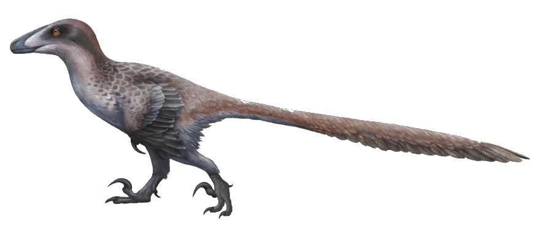

Авацера́топс (от лат. Avaceratops) — род мелких динозавров, которые жили в промежутке между 83 и 74 миллионами лет назад, во время позднего мелового периода на территории штата Монтана. Авацератопс относится к семейству цератопсидов -травоядных динозавров с клювами, подобными клювам попугаев, которые процветали во время мелового периода на территории Северной Америки и Азии. Предполагается, что, как и другие центрозаврины, он имел два рога: более крупный на носу и поменьше над глазами. Возможно это была молодая особь другого рода, например моноклона. Его длина 2,5 метра, но учёные считают что настоящая длина его была 4,2 метра.
Дакотараптор (от лат. Dakotaraptor) - является одним из крупнейших дромеозаврид и по размерам приближен к Utahraptor — самому большому представителю семейства. Помимо большого размера, в описании указано ещё несколько отличительных черт (аутапоморфий). Второй и третий когти ноги имеют острые края на внутренней стороне. Длина серповидного когтя составляет 29 % от длины бедренной кости.
Ругопс (лат. Rugops, буквально — морщинистая морда) — род динозавров, живший 97—92 млн лет назад (сеноманский отдел позднего мелового периода) на территории нынешней североафриканской страны Нигер. Своё название получил из-за того, что голова его была пронизана венами и артериями, оставившими борозды, отпечатавшиеся на черепе. Достигал в длину 9 метров, высоты 2,5 метра и веса 1,5 тонны. Впервые описали его Пол Серено, Уилсон Конрад в 2004 году по ископаемым останкам черепа ругопса.
Анатотитан (от лат. Anatotitan) — крупнейший в Северной Америке уткоклювый динозавр без гребня. Обитал около 68—65 миллионов лет назад, в конце мелового периода. Три пальца его длинных задних ног напоминали копытца. Длинная голова с плоской широкой мордой была похожа на утиную.
Овирапторы ухаживали за яйцами и за потомством. Они строили специальные гнёзда для кладок яиц: выгребали траву и землю, создавая кучу высотой около метра, затем, прыгая на её вершине, создавали углубление. После проделанных действий самка делала несколько кладок в углубление на вершине гнезда. Кладки были в форме веера или разомкнутого круга. Затем самец и самка поочерёдно следили за гнездом, защищая его от перегрева и мелких рептилий вроде ящериц и змей, а также, возможно, от обитавших поблизости мелких птиц гобиптериксов.
Ауказавр (от лат. Aucasaurus — «Ящер из Акуа-Мауэво») — род динозавров, живший 83—71 млн лет назад. Ауказавр был похож на своего родственника карнотавра, но был на треть меньше. У карнотавра по бокам головы были рога, а у ауказавра только шишки, возможно, используемые как структуры для идентификации пола. Передние конечности, хоть и крохотные (всего 25 см в длину), были всё же не так малы как у карнотавра. Похоже, они состояли чуть ли не исключительно из плечевых костей: лучевая и локтевая кость по размерам не превышают костей 4 пальцев.